This page is purely dedicated to rankings for the 2021-2022 season . I have taken in as many things as possible to try to make the best rankings. Many things that I will take into account are seniority of the team, how many players said team lost in the offseason, and how good of a recruiting class each team got. In my top 25 I will write a section on each top 20 team that I have selected which explains my decision. I am trying my hardest not to be bias but we'll see how that works out.
| Ranking | Team |
| 1 | UCLA |
|
UCLA suprised us all last season as they came out of the first four games and made it all the way to the final four as an 11 seed. Assuming that Johny Juzang comes back they are not losing any of their starting 5 and they're receiving a great prospect in Peyton Watson who will help them in the depth category as they were mainly playing a 6 man rotation. All this combined should turn out to be a great championship contending team that has a great chance to go far in the 2022 tourney. |
| 2 | Gonzaga |
| Gonzaga had a nearly perfect season last year, but they lost in the championship to Baylor in a blowout loss. Gonzaga is losing Jalen Suggs and Corey Kispert, but they keep stud Drew Timme who carried the team throughout the tournament. I still have high expectations of this team after coming off their one loss season. They have gained great recruits such as Chet Holmgren and Hunter Sallis . They will see a decline in win perecentage but that was almost guaranteed after last years outstanding season. | |
| 3 | Alabama |
|
The Alabama Crimson Tide shocked the sports world last year after being the first team in 12 years to win the SEC championship in basketball and football. This team was one of the most suprising teams of the 2020-2021 season as they improved on their record form the previous season by winning 13 more games than the previous year. Allthough they are losing studs Herb Jones and John Petty they are gaining great talent in return. They got JD Davison and Charles Bediako out of highschool and also obtained previous 5 star transfer Nimari Burnett out of Texas Tech and they also got Noah Gurley out of Furman who was averaging 16 ppg there. You can expect Josh Primo, Jaden Shackelford and Star PG Jahvon Quinerly to lead the way next year for the Crimson Tide. |
| 4 | Villinova |
| 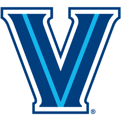 | Villinova is coming off of a below average season for Villinova. Being a 5 seed in the tourney was not ideal for the wildcats. This was heavily due to Collin Gilipsie getting hurt midway through the season. With Collin Gilipsie returning and Jay Wright's coaching you can expect Villinova to be in the same spot as they were midway through the season and have a solid chance to secure a 1 seed going into the tourney. |
| 5 | Michigan |
|
The only reason why I have the previous 1 seed Michigan wolverines down at the 5 seed is due to their lack of experience. They are losing most of their 8 players in their rotation from last year and are expecdted to be starting 2 freshman and a sophmore who only averaged 1 ppg last season. This might sound bad but the wolverines have the best recruiting class in the nation and have last years Big 10 freshman of the year in Hunter Dickinson. I expect this team to struggle in the begining due to their lack of experience but once they hit their stride it's over for everyone. |
| 6 | Ohio State |
|
Ohio state is returning 7 of their top 8 players which earned them a 2 seed in last years tourney, so this is a no brainer pick for a top 8 team. |
| 7 | Arkansas |
|
Arkansas is losing leading scorer Moses Moody, but they are keeping JD Notae and many other pieces and they also gained at least 4 double digit scorers through the transfer portal. |
| 8 | Baylor |
| 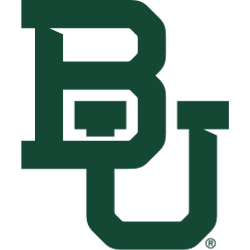 | Baylor is very low for a reigning champion, but this is due to many different factors. Baylor is losing many key pieces such as Davion Mitchell and Jared Butler who carried their team last year. They are adding a top 10 recruiting class and kept other key pieces which will keep them within the top 8 in my rankings. |
| 9 | Duke |
| 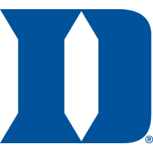 | After an abismal season and debateably coach K's worst season in the past 20 years which included a COVID-19 scare that kept Duke out of the NCAA Tournament, I expect Duke to pick it up. After gaining 3 5-star recruits and possibly 4 Duke should be a top team in the ACC. |
| 10 | Kansas |
| 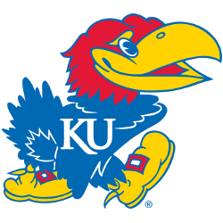 | Kansas is returning 4 of their starting 5 that took this team to be a 3 seed in the 21' tourney. None the less they should be a great team and play like they did on their 9-2 stretch in their last 11 games. |
| 11 | Maryland |
| 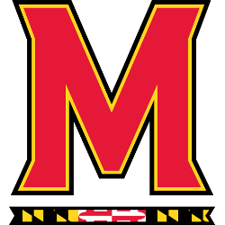 | Maryland is a very underrated team goign into next year. They had a mediocre season last year but after using the transfer portal very well this off-season it looks like this team will make the BIG-10 better than they already are. |
| 12 | Purdue |
| 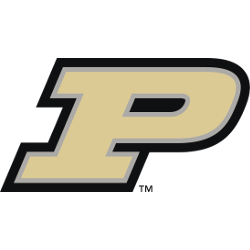 | Purdue is returning every single player that took them to become a 4 seed in the NCAA tourney so this tream should only get better and will probably improve on last years season. |
| 13 | Houston |
| 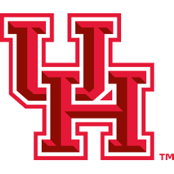 | With Kevin Sampson as coach Houston will always be top 25. All though they did lose Quentin Grimes they should still see success next year. |
| 14 | Florida State |
| Florida State could very well be one of the top 5 next teams next year. ALlthough they are losing 4 of their top 5 scorers they are adding in 2 7 footers and Matthew Cleveland and Caleb Mills. | |
| 15 | Kentucky |
|
Not much to say here, we all know what coach Cal can do with a top 10 recruiting class. |
| 16 | North Carolina |
|
UNC is a very intruiging team next year as they added a ton of new players but they also lost a lot as well. With their new head coach this should be an interesting team to watch |
| 17 | UConn |
|
UConn hasn't been a dominate baskeball team in awhile but recently they have seem to rebuilt their team very well and look to be a very good team this year that can compete with Villinova in the Big East. |
| 18 | Michigan State |
|
Michigan State is trying to stay away from rembering last year as they lost in the first 4 in the NCAA tourney, but with many new players this team can turn around and accell. |
| 19 | Oregon |
| 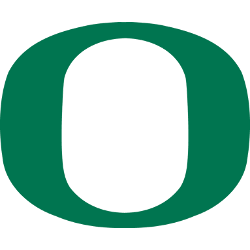 | Last years PAC-12 champs are looking very good going into next year the only problem they face is now having hard opponents in the PAC-12 such as UCLA. |
| 20 | Texas |
| 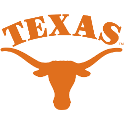 | Texas didnt have the greatest recruiting class but they gained 3 players thorugh the transfer portal. |
| 21 | Auburn |
|
|
| 22 | St. Bona |
| 23 | Virginia |
| 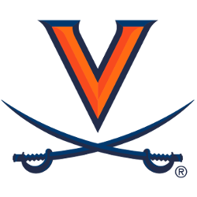 | |
| 24 | USC |
|
|
| 25 | Syracuse |
| 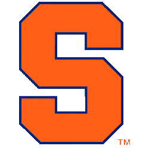 | |
| Dead Last | Tennessee |
|
This team is downright horendous and have no chance of doing anything productive in any sport ever. This team wouldnt be able to win a game in a 5U basketball game. |